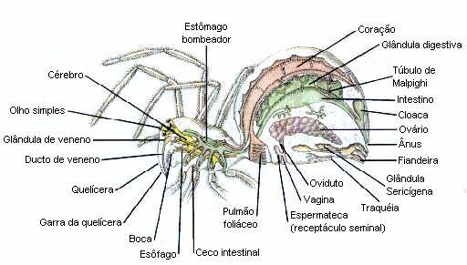

A aranha-marrom é um animal invertebrado e venenoso. Pertence ao gênero Loxosceles, do qual oito espécies ocorrem no Brasil. A aranha-marrom ocorre em todo o Brasil, sendo mais frequente nas regiões sul e sudeste. A aranha-marrom é indefesa, não costuma atacar o homem.
Essa espécie é pequena, com cerca de 3cm e colocação marrom esverdeada. Aliás, no Brasil existem 18 espécies diferentes desse animal.
Nesse sentido, a diversidade de espécies da aranha-marrom e sua aparência causam uma confusão com outras espécies da aranha. Sendo assim, é um desafio identificar sua toxicidade, mas no geral, somente especialistas conseguem identificar essa característica. Por isso, recomenda-se o contato com qualquer espécime similar.
Entretanto, o maior número de casos de acidentes no Brasil acontece com a aranha-marrom, pois sua picada pode causar degradação e necrose local, sendo necessário acompanhamento médico e aplicação de soro.
O que fazer após a picada de aranha?
Lavar o local com água e sabão;
Usar uma compressa morna para aliviar a dor;
Manter o local da picada elevado;
Mesmo que a aranha não pareça com as citadas, procurar atendimento médico;
Se for possível, levar a aranha para facilitar a identificação.
2. Viúvas-negras (Latrodectus sp.)
A viúva-negra é popularmente conhecida pelo hábito de devorar o macho após o acasalamento, mas também por ser uma espécie com a fêmea maior e mais forte do que o macho. Nesse sentido, a fêmea ainda é identificada pela coloração preta e brilhante.
Além disso, a fêmea também é diferenciada por uma marca vermelha em seu ventre. No geral, o macho é menor e inteiramente preto.
Mais ainda, a picada da viúva negra é letal e provoca dor intensa, além disso, seu veneno age no sistema nervoso central, medula e músculos.
Dessa forma, é possível que a picada dessas espécies de aranha causem a morte do indivíduo. Assim, os sintomas da picada da viúva-negra são dores musculares fortes, suor e tremores.
A boa notícia é que o veneno das viúvas-negras que estão no Brasil são considerados menos letais, porém, em todos os casos é indicado a ausência de contato com a espécie.
Lavar o local da picada.
Usar compressas mornas, pois ajudam no alívio da dor.
Elevar o local da mordida.
Procurar o serviço médico mais próximo.
Quando possível, levar o animal para identificação.
3. Aranha-armadeira (Phoneutria sp.)
Ao contrário das outras espécies da aranha, a aranha-armadeira é venenosa e agressiva, bem como é responsável pelo maior número de acidentes registrados. Além disso, seu veneno é um dos mais perigosos.
Essa espécie tem cerca de 3-4cm e apresenta coloração marrom. porém, suas patas alcançam até 15cm de envergadura. Assim, ela é encontrada em ambientes externos, e no Brasil sua incidência é mais comum no Sudeste.
O veneno das armadeiras pode causar náuseas, vomitos e diminuição da pressão sanguínea, mas geralmente, a maior parte dos acidentes graves ocorre com crianças. Neste caso, os principais sintomas são intensa salivação, vômito, diarreia, choque e edema agudo de pulmão.
Comumente, a picada da aranha-armadeira geralmente produz dor imediata no ponto atingido, porém, é possível tratar de maiores reações com o soro no hospital e os óbitos são raros.
Como é um veneno poderoso, o tratamento precisa ser imediato. O uso de anestésicos e a aplicação do soro antiaracnídico são alternativas eficazes para neutralizar o veneno. Normalmente, a aranha-armadeira são encontradas em bananeiras, folhagens, pedras empilhadas e no interior de residências.
Tarântulas (Lycosa sp.)
Confundidas com a aranha-armadeira, as tarântulas são menores e não apresentam faixas brancas nas patas, mas também são conhecidas como aranhas de jardim, pois normalmente vivem em jardins e quintais. Além disso, sua picada tem ação local, necrosante e com ardência, porém, essa espécie não é uma aranha agressiva.
Além disso, não tem um veneno tóxico para humanos, por isso, não há necessidade de administração de soro em caso de acidentes.
Entre as subespécies da aranha-armadeira, encontra-se a tarântula de jardim, tarântula negra e a aranha golias. Nesse sentido, a aranha golias é o maior aracnídeo em peso corporal do mundo, e também pode alcançar 30cm de comprimento.
Após 5 dias é comum o surgimento de uma casquinha preta na pele que cai, 2 a 3 semanas depois, provocando uma ferida que deve ser tratada no hospital. Cuidados especiais: deve-se manter a região sempre seca e evitar fazer atividade física, pois pode ajudar a espalhar o veneno pelo corpo.
Aranha golias
Conhecida como a aranha-golias-comedora-de-pássaros sul-americana, ou simplesmente aranha-golias (Theraphosa blondi), esta é a maior aranha do mundo, segundo o livro dos recordes do Guiness. Tem uma envergadura de patas que chega aos 30 centímetros e pode pesar até 170 gramas, o mesmo que um cachorro recém-nascido.
A aranha golias também é nativa da região amazônica brasileira, curiosamente a espécie consegue devorar um pássaro inteiro e até morcegos. Além disso, a picada dessa espécie causa náuseas, hiperidrose e forte dor local, pois suas quelíceras possuem 3cm de comprimento.
Mais ainda, a aranha golias possui pelos urticantes que causam irritações na pele e nas vias respiratórias, porém, apesar do tamanho e dos hábitos, o seu veneno não leva seres humanos à morte.
Aranhas-caranguejeiras (Grammostola sp.)
<
As caranguejeiras são aranhas grandes, podendo chegar até 26cm de comprimento. Com coloração preta, marrom, cinza ou rosa, a caranguejeira tem um corpo coberto de pelos urticantes que servem como mecanismos de defesa e função sensorial. Além disso, esses pelos dão uma aparência texturizada e peluda ao animal.
Mas, ao contrário do que se pensa, as caranguerejeiras são espécies de aranha com picada pouco letal, ou seja, a picada causa dor local, mas não lesão física. No entanto, seus pelos podem causar irritação na pele, além de sensação de queimadura; Além disso, nas vias respiratórias e olhos podem causar coceira.
Assim, por serem pouco agressivas, essas aranhas são alvos comuns do comércio ilegal de animais.
Aranha-teia-de-funil (Atrax robustus)
A aranha-teia-de-funil é nativa da Austrália, e tem esse nome por fazer teias afuniladas. Aliás, a espécie é perigosa, pois, seu veneno pode ser fatal ao sistema nervoso dos seres humanos.
Essa espécie é extremamente agressiva, até utilizando a própria pata para prender suas vítimas e injetar o veneno. Portanto, quando ataca, o animal costuma ficar em suas patas traseiras para expor os ferrões e intimidar a presa.
Além disso, a aranha-teia-de-funil pode chegar a medir cinco centrímetros e possui o corpo coberto por pelos que o ajudam a nadar. A espécie apresenta coloração negro-azulada ou marrom escuro, tendo tanta força que sua picada que é capaz de perfurar até a unha humana.
Aranha Papa Mosca
Aranha-saltadora, aranha de parede ou papa-moscas é a família mais numerosa de aranhas, contando com mais de 500 gêneros e cerca de 5 000 espécies (cerca de 13% das espécies conhecidas de aranhas), conhecidas popularmente como aranhas-saltadoras ou aranhas papa-moscas, com distribuição quase mundial. Estas aranhas não fazem teia para caçar, mas ficam à espera, saltando rapidamente sobre a presa. Após a caça, aprisionam a presa a uma teia específica e muito resistente. Elas podem saltar também para se movimentarem ou para fugir dos predadores. Possuem uma teia mais resistente e são o tipo de aranhas mais rápida e ágil do reino dos aracnídeos. Tendo uma resistência muito melhor do que a de outros aracnídeos, é um tipo de aranha muito resistente. As aranhas-saltadoras ou aranhas papa-moscas têm um veneno mais poderoso que o de outras aranhas (dependendo da espécie).
<
CARACTERÍSTICAS DA ARANHA:

As aranhas apresentam o corpo dividido em duas partes: cefalotórax e abdome. Do cefalotórax partem seis pares de apêndices, sendo quatro pares de patas, um par de quelíceras e um par de pedipalpos. No abdome encontra-se as fiandeiras, estruturas por onde saem os fios de seda utilizados na produção da teia e da ooteca.